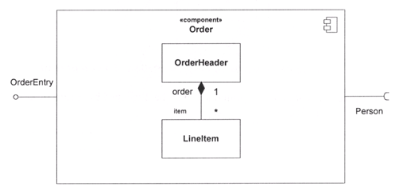

Software Engineering
Component DiagramsCourse Map
Agenda
-
A component is a self contained unit that encapsulates the state and
behavior of a number of classifiers. A component
specifies a formal contract of the services that it provides to its clients
and those that it requires from other components
or services in the system in terms of its provided and required interfaces.
-
A component is a substitutable unit that can be replaced at design
time or run-time by a component that offers equivalent
functionality based on compatibility of its interfaces. As long as the
environment obeys the constraints expressed by the
provided and required interfaces of a component, it will be able to interact
with this environment. Similarly, a system can
be extended by adding new component types that add new functionality.
-
The required and provided interfaces of a component allow for the
specification of structural features such as attributes
and association ends, as well as behavioral features such as operations and
events. A component may implement a
provided interface directly, or, its realizing classifiers may do so. The
required and provided interfaces may optionally be
organized through ports, these enable the definition of named sets of
provided and required interfaces that are typically
(but not always) addressed at run-time.
-
A component has an external view (or “black-box” view) by means of its
publicly visible properties and operations.
Optionally, a behavior such as a protocol state machine may be attached to
an interface, port, and to the component itself,
to define the external view more precisely by making dynamic constraints in
the sequence of operation calls explicit.
Other behaviors may also be associated with interfaces or connectors to
define the ‘contract’ between participants in a
collaboration (e.g., in terms of use case, activity, or interaction
specifications).
-
The wiring between components in a system or other context can be
structurally defined by using dependencies between
component interfaces (typically on structure diagrams). Optionally, a more
detailed specification of the structural
collaboration can be made using parts and connectors in composite
structures, to specify the role or instance level
collaboration between components (See Chapter Composite Structures).
-
A component also has an internal view (or “white-box” view) by means
of its private properties and realizing classifiers.
This view shows how the external behavior is realized internally. The
mapping between external and internal view is by
means of dependencies (on structure diagrams), or delegation connectors to
internal parts (on composite structure
diagrams). Again, more detailed behavior specifications such as interactions
and activities may be used to detail the
mapping from external to internal behavior.
Component Notation
- A component is shown as a Classifier rectangle with the keyword
«component». Optionally, in the right hand corner a
component icon can be displayed. This is a classifier rectangle with two
smaller rectangles protruding from its left hand
side.
- Black box notation
The ball-and-socket notation. A Component with two provided and three required interfaces
- Alternatively, the interfaces and/or individual
operations and attributes can be listed in the compartments
of a component box (for scalability, tools may offer way of listing and
abbreviating component properties and behavior).
Black box notation showing a listing of the properties of a component
- For displaying the full signature of an interface of a component,
the interfaces can also be displayed as typical classifier
rectangles that can be expanded to show details of operations and
events.
White Box Components
- An internal, or white box view of a Component is where the realizing
classifiers are listed in an additional compartment.
Compartments may also be used to display a listing of any parts and
connectors, or any implementing artifacts.
A white-box representation of a component

Nested representation
Internal Component Classifiers
- The internal classifiers that realize the behavior of a component
may be displayed by means of general dependencies.
Alternatively, they may be nested within the component shape.
Ports and Combing Other Components
- Interfaces that are exposed by a Component and notated on a diagram,
either directly or though a port definition, may be
inherited from a supertype component. These interfaces are indicated on
the diagram by preceding the name of the
interface by a forward slash. An example of this can be found below,
where “/OrderableItem” can be an interface that is
implemented by a supertype of the Product component.
- A delegation connector is notated as a Connector from the delegating
source Port to the handling target Part, and vice versa for required
Interfaces or Ports.
- An assembly connector is notated by a “ball-and-socket” connection
between a provided interface and a required interface. This notation
allows for succinct graphical wiring of components, a requirement for
scaling in complex systems.
Example of a platform independent model of a component, its provided and
required interfaces, and wiring
through dependencies on a structure diagram.
Component Assembly
In a system context where there are multiple components that provide or
require a particular interface, a notation abstraction can be used that
combines by joining the multiple connectors. This abstraction is similar to
the one defined for aggregation and subtyping relationships.
As a notation abstraction, multiple wiring relationships can be visually
grouped together in a component assembly.